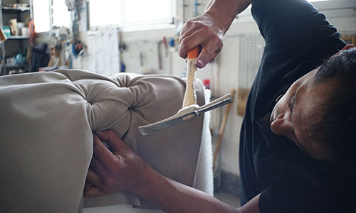
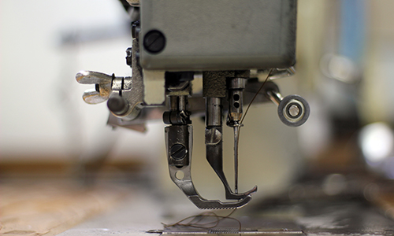

HOME > 지속가능경영 > 고객감동경영
고객감동경영
한샘의 과거 성장과 미래 혁신을 이어갈 원동력은 고객감동 경영입니다
안전약속
고객의 불만의 목소리는 제품의 안전을 더욱 강화시키는 원동력이 되었습니다.
이를 끊임없이 보완하고 서비스를 강화하며 고객에게 최상의 만족을 전하겠다는
고객감동의 다짐은 한샘을 50년간 성장시켜 온 근간이기도 합니다.
안전보건경영 성과 및 계획
| 목표 | 2021년 성과 | 2022년 계획 |
|---|---|---|
| 안전사고 ZERO | 사업장별 자율안전점검 체계 구축 사업장별 안전보건담당자의 안전의식 수준 향상 |
전문기관 컨설팅을 통한 사고 사전예방 실시 비상대응훈련을 통한 사고 대응능력 향상 |
경영전략
한샘은 철저한 품질 관리를 통해 고객이 건강하고 안전하게 제품과 서비스를 이용할 권리를 지키고 있습니다.
한샘은 CQO (최고품질경영책임자) 주관으로 사내 품질 관리조직인 생활환경기술연구소, CS품질 혁신팀에서 분기별 품질과
관련한 핵심성과 지표를 합의 및 설정하고 제품과 서비스의 종합적인 품질을 관리하고있습니다.
신제품 출시검증
프로세스
식스시그마 경영


한샘은 0.001%의 불량도 허용하지 않는 식스시그마 경영 전략을 기반으로 품질 혁신을 통한 고객만족을 추구합니다.